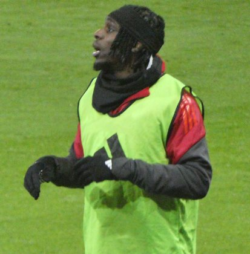

PITCHKEEP
Premier League ranks
Player File · DEF LIV · Premier #218

Jeremie Frimpong
DEF · Liverpool · age 25 · £5.5m
2025/26 Premier League
| Year | Starts | Min | G | A | xG | xA | CS | GC | Bonus | YC | Sleeper | FPL |
|---|---|---|---|---|---|---|---|---|---|---|---|---|
| 2025/26 | 12 | 1032 | 0 | 5 | 0.5 | 1.55 | 5 | 13 | 1 | 1 | 55.6 | 63 |
Plus
- 55.6 Sleeper BPL 2025 points (Pitch #232).
- Consensus 163.12 vs Sleeper #232 — the industry still believes more than 2025/26 counted.
Minus
- 5 assists on 1.55 xA — the creation number needs a second season.
- Board spread 55–232 (FPL EP Next to Sleeper BPL 2025).
PitchKeep Take · The Premier
Jeremie Frimpong is a defender for Liverpool, age 25, £5.5m. The Premier ranks him 218th overall by splitting Sleeper BPL 2025 (#232, 55.6 points) with the consensus of 8 other boards (163.12). The industry still has him 69 spots ahead of the 2025/26 Sleeper count. The Premier pays that reputation something, not everything. Brand does not outrun a down year, and a down year does not erase a player Liverpool still builds around.
The 2025/26 Premier League line is 12 starts and 1032 minutes, 0 goals and 5 assists, 5 clean sheets, 13 goals against, 11 tackles and 19 CBI. Official FPL scored it at 63 points (3.0 per match) with 1 bonus. Sleeper's table turned the same counting stats into 55.6. Defenders get 10 a goal, 7 an assist, 6 a clean sheet, and −2 a goal against. CBI at 0.4 and tackles at 1 are how a centre-back cracks the overall 50.
Underlying: 0.5 xG, 1.55 xA, 2.05 xGI and 3.5 above expected assists. The defensive events are the floor: 11 tackles, 19 clearances/blocks/interceptions, 5 shutouts. Sleeper is built to notice that. ICT and xGI boards are not, which is why a centre-back's spread on this desk is usually ugly and still informative. The friendliest board is FPL EP Next at 55; the coldest is Sleeper BPL 2025 at 232.
Market: £5.5m, 3.3% owned into the 2026/27 FPL start, 9 boards on the file. That ownership is a leftover. Either the public missed a real season or the public correctly decided the role is not repeatable. The Premier's rank is our vote. If we have him inside the first 80 and they have him at 0.4%, that is a Sleeper buy. FPL's own EP-next is 2.5. ICT 56.5.
Instruction: he is on the 400, which is already a statement, and he is not a star. Stash in Sleeper if the minutes are real. Do not let a Pitch screenshot make you start him over a Premier top-80. Nearby on The Premier: Will Hughes, Djed Spence, Antonín Kinský. Versus The Pitch (Sleeper-only #232), the hybrid moves him up to #218. That move is the third list doing its job.
He is 25, which on this desk is neither a dart nor a warning label. Prime-age defenders get ranked on what they just did and whether Liverpool still gives them the ball. 1032 minutes says yes. The 2026/27 FPL price (£5.5m) is the app's guess at whether that continues. The Premier is the blend of that guess and the box score.
Full-backs and centre-backs separate on this desk by attacking events. 0 goals and 5 assists are how a defender outruns his GA column. Without those, you are betting 5 clean sheets and the CBI stream (19) against 13 goals against at −2 a piece. Liverpool's 2026/27 defensive shape is therefore half of this player's rank. The other half already happened, across 12 starts.
How to use the file: The Pitch is the Sleeper-only 400 (he is #232 there). The Premier is the 50/50 with every other board we track. Attack, Midfield, Defence, and Keepers re-rank the same Sleeper table by position. BK Value on this page follows The Premier when you are on the hybrid calculator and The Pitch when you are on the Sleeper calculator. Same curve either way — 12,000 at 1.01. Unranked sources are skipped, never treated as 999, which is why a player missing from Yahoo's XI is not secretly ranked 400th.
Sleeper vs FPL
Same 2025/26 line, two scoring tables
Board graph
Spread 55–232 · 9 sources
Tape · 2025/26 Premier League
Jeremie Frimpong - ALL 2 GOALS & ASSISTS FOR LIVERPOOL IN 2025/26 | Skills & Highlights
Every Board
Spread 55–232 · 9 sources
| Source | Rank |
|---|---|
| FPL EP Next | 55 |
| FPL GW1 Ownership | 94 |
| LiveFPL community | 94 |
| FPL Price Board | 187 |
| FPL 2025/26 Points | 212 |
| FPL Draft | 212 |
| FPL xGI | 220 |
| FPL ICT Index | 231 |
| Sleeper BPL 2025 | 232 |
On The Premier nearby — Will Hughes (#216) · Djed Spence (#217) · Antonín Kinský (#219) · Nico Iglesias (#220)